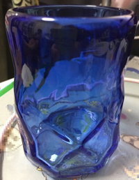

鉄は熱いうちに打て
=============================
PyLadies Tokyo 沖縄秋合宿 2018 行ってきました¶
2018-11-10
PyLadies Tokyo 沖縄秋合宿 2018 に参加しました。
はしゃぎすぎたのか、帰ってきてから体調最悪で病院に2回行って、仕事も自宅作業でずっと自宅にいました。
大分、良くなったので旅の思い出まとめ。
１日目¶
一人寂しく4時半に起きて5時過ぎの電車に乗って羽田空港へ移動。
そこから一人寂しく那覇空港へ。
那覇空港で合流できた人とランチと、ビール！
こんにちは。オリオンビール！ってことで美味しくいただきました。シンハービールに似てる感じですね。南国感がある。
なんだかんだで宿に到着！宿の前には守り神のお姿が！
早速モクモクする皆様。（いろいろあれなんで強めにモザイク）
沖縄の温泉にも行きました。景色も泉質も、かなり良かったです！
夕食タイム１日目。食事担当のみなさんが美味しいものいっぱい作ってくれたんですが、痛恨の写真撮り忘れ。ビールの写真はたくさん撮りました。
もう疲れすぎてて、座っても寝落ちしてたりしてたので22時には寝ました。 2段ベッドが4つ並んだ部屋があって、修学旅行みたいでした。端っこの下で先に休ませてもらいました。
2日目¶
昼食。宿の近所のお店で買ってきてもらいました。美味しかったです。
2日目もあいにくの雨で、リビングでモクモクしてました。海岸に行ったメンバーもいて楽しそうでした！！
夕食タイム2日目。食事担当でした。買いすぎて、作りすぎました。ごめんなさい。買った肉がけこう余って、どーすんのよ？という空気に。（余ったものを次の日の朝に２日目食事担当メンバーで全力で調理したらきれいに無くなりました。）
飲んだものの記録
3日目¶
二手に分かれて観光しました。私は南組。
斎場御嶽（せーふぁーうたき）という世界遺産。結構歩いたので汗だくになりました。思ったよりパワースポット感が強かったです。
おきなわワールド。無料でレストランに行けるので、レストランに行って沖縄料理バイキングを食べました。ビールは飲んでないよ。
亀とかめちゃん
その後、国際通りで琉球グラスを作って、モノレールに乗って空港に移動しました。国際通りであまり時間が取れなくて残念でした。また行きたいです。
飛行機に乗る前のラストオリオン。
PyLadies合宿記念に買ったお土産の蛇。
後日、琉球グラス届きました。いい感じ。
全体写真。
沖縄合宿！集合写真！#PyLadiesTokyo pic.twitter.com/7Once0vksJ
— PyLadiesTokyo (@PyLadiesTokyo) 2018年11月3日
こんなに大人数で同じ家に泊まれるって、楽しくないわけがない！
結構酔っ払っていたので何を話したかあまり覚えてないですが、各方面で活躍する方々のお話も聞けてよかったです。
また来年も参加したい！と思いました！！